Source-level breakpoints, assembly-flavoured stepping, watches, memory and IO watchpoints, a cycle-costed trace, and stepping backwards in time.
The debugger works at two altitudes at once. You set a breakpoint on a line of your assembly, and
when it hits you are paused in the same timeline the waveform analyzer is recording — so you can read
your source line, inspect registers, and scrub the waveforms backwards to watch the bus cycles
that led there. No hardware trainer can do that.
Breakpoints are exact, not approximate. A source line is resolved through the proved memory
map to every physical address where that instruction's byte answers — which matters enormously on kit
boards, where partial address decoding mirrors your ROM across dozens of windows.
The editor
Write 8086 assembly with labels, EQU constants, expressions,
DB/DW/TIMES, and segment overrides. Errors are reported by line
number. Assembling programs the board's ROM.
The assembler pane — Labels, EQU constants, expressions, DB/DW/TIMES, segment overrides and the full 8086 instruction set. Errors are reported by line; assembling programs the board's ROM.
Breakpoints
Click the gutter for a breakpoint, shift-click for a conditional one. Conditions are
full expressions — AX==5, CX>2 && ZF, w[counter]!=0 —
and each breakpoint can also carry a hit count, so you can stop on the 500th pass through a loop.
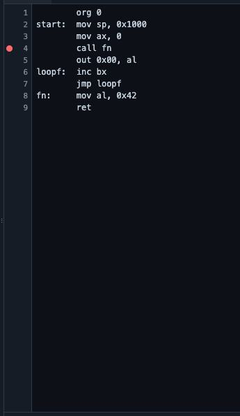
Click the gutter — A red dot marks a line breakpoint. It is resolved through the proved memory map to every physical address where that instruction answers — which matters enormously on boards with partial decoding.
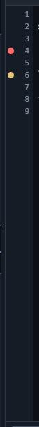
Conditional breakpoints — Shift-click sets a condition. An amber dot means the line only stops when its expression is true — here, only when BX reaches 3.Stopped at a breakpoint — The hint bar names what stopped you and reminds you of the stepping keys.
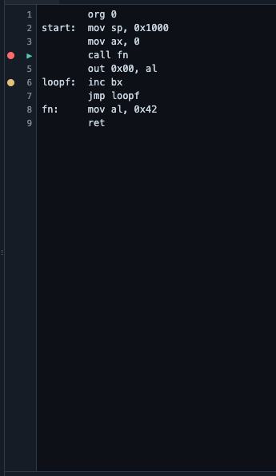
The current line — A highlight bar and a ▶ arrow mark the instruction about to execute; the editor scrolls to keep it in view as you step.
The Debug tab
One pane holds the whole session: stepping controls, watches, breakpoints,
watchpoints, call stack, live disassembly and the instruction trace.
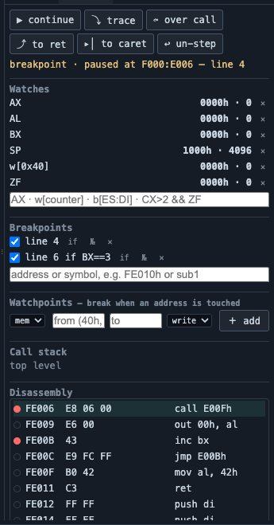
The Debug tab — Stepping controls, watches, breakpoints, watchpoints, call stack, live disassembly and the instruction trace — one pane for the whole session.
Stepping
The labels speak assembly, not C. ⤵ trace is DEBUG.COM's Trace — one
instruction, descending into calls. ⤼ over call is Proceed — a whole
CALL, INT or REP executed as one step. ⤴ to ret
finishes the current subroutine. ▸│ to caret runs to the cursor line.
↩ un-step un-executes the last instruction.
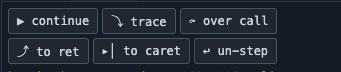
Assembly-flavoured stepping — ⤵ trace is DEBUG.COM's Trace — one instruction, into calls. ⤼ over call is Proceed — a whole CALL, INT or REP as one step. ⤴ to ret finishes the subroutine. ▸│ to caret runs to the cursor. ↩ un-step travels backwards in time.
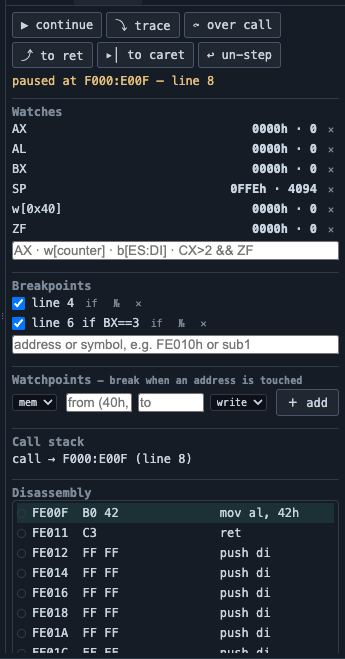
After 1 instruction — Each step updates the watches, the call stack, the disassembly and the trace together — and the watch values flash when they change.
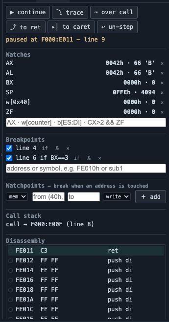
After 2 instructions — Each step updates the watches, the call stack, the disassembly and the trace together — and the watch values flash when they change.
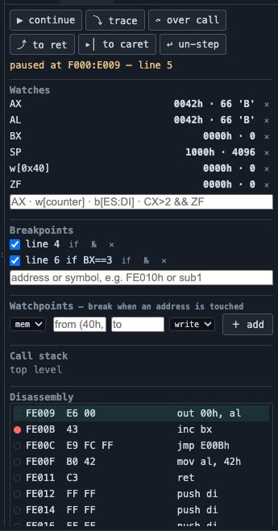
After 3 instructions — Each step updates the watches, the call stack, the disassembly and the trace together — and the watch values flash when they change.
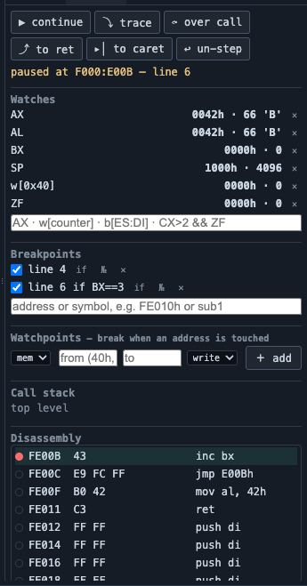
After 4 instructions — Each step updates the watches, the call stack, the disassembly and the trace together — and the watch values flash when they change.
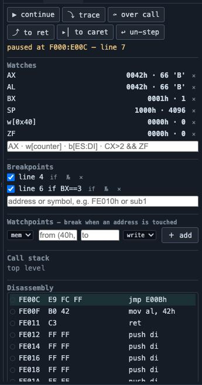
After 5 instructions — Each step updates the watches, the call stack, the disassembly and the trace together — and the watch values flash when they change.
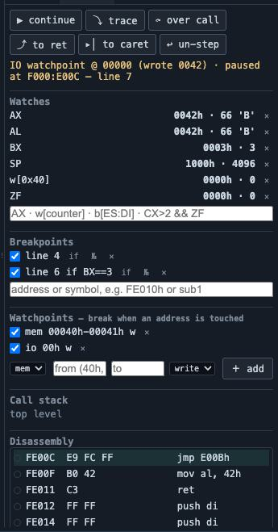
Un-stepping — ↩ un-step un-executes the last instruction by riding the rewind history — the register you just watched change goes back to what it was.
Call stack
CALL/RET and every interrupt — software INT,
hardware IRQ, NMI and single-step traps — are tracked as frames, with the vector shown for interrupt
frames.
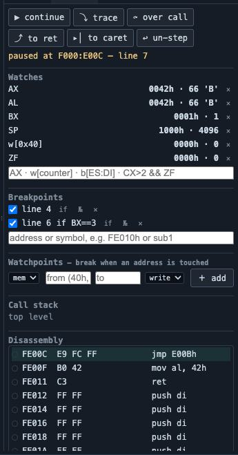
The call stack — CALL/RET and every interrupt — software INT, hardware IRQ, NMI and single-step traps — are tracked as frames, with the vector shown for interrupt frames.
Disassembly
Paused outside your own source — in the BIOS, or an interrupt handler you did not
write — the debugger disassembles live from mapped memory. Click any line to set a breakpoint at that
address.
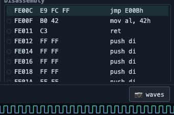
Live disassembly — Paused outside your own source — in the BIOS, or a handler you did not write — the debugger disassembles straight out of mapped memory. Click any line to set a breakpoint there.
Trace
Every retired instruction is recorded with its exact cycle cost, so you can
see for yourself that a MUL costs what the datasheet claims. Interrupt vectors are
annotated, the register that changed is tagged, clicking a row jumps to its source line, and the whole
trace exports as text.
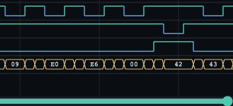
The instruction trace — Every retired instruction with its exact cycle cost, interrupt vectors annotated, and the register that changed. Click a row to jump to its source line; export the whole thing as text.
Watchpoints
This is the feature no real 8086 kit could offer: break when an address is
touched. Set a memory watchpoint on a range and the machine stops on the instruction that
wrote it, reporting the value. "Who is corrupting my stack?" answers itself. IO watchpoints do the
same for port accesses. The hook sits inside the CPU's bus generators, so nothing escapes at any
speed — including turbo.
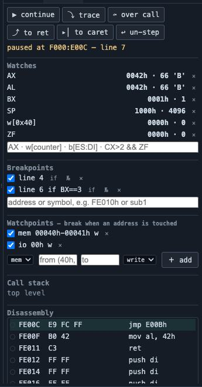
Memory and IO watchpoints — Break when an address or range is written or read, or when an IO port is touched. "Who is corrupting my stack?" answers itself — and the hook sits inside the CPU's bus generators, so nothing escapes even in turbo.
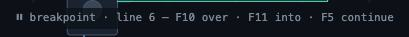
A watchpoint fires — The machine stops on the instruction that touched the address, and reports what was written.